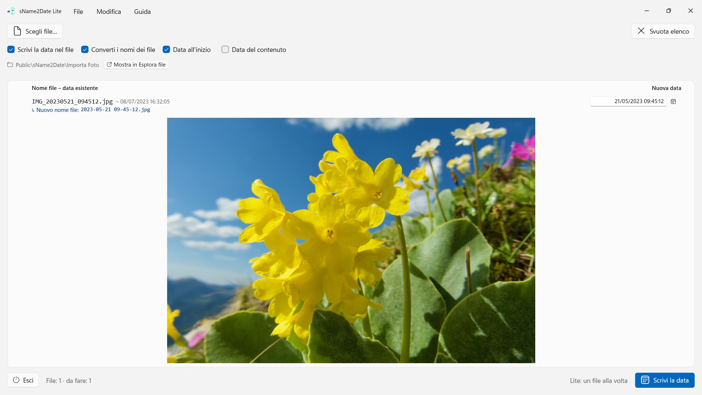
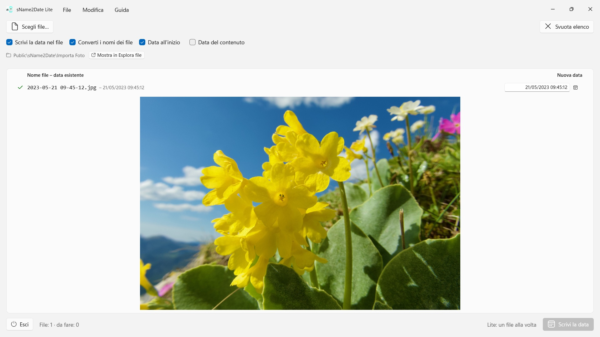

sName2Date Lite
Legge la data dal nome del file — più di una dozzina di notazioni, nomi dei mesi nella lingua dell’app e in inglese
Prende la data dal nome del file e la scrive come data di scatto in una foto o in un filmato, così il tuo gestore di foto ed Esplora file lo ordinano correttamente. Un file alla volta, gratis, tutto si annulla con Ctrl+Z.


Molte foto e molti filmati portano la loro data nel nome del file, così come registrazioni audio e documenti come i PDF — ma non dove i programmi la cercano. Chi acquisisce un'immagine da una chat, da uno scanner o da un vecchio archivio si ritrova un file come IMG_20240115_103000.jpg, Vacanze 15.01.2024.jpg o Fattura 23112024.pdf, che in qualsiasi gestore di foto e in Esplora file compare con la data di oggi.
sName2Date legge la data dal nome del file e la scrive nel file come data di scatto. Se non ce n'è ancora una, viene creata. Per i PDF e gli altri file senza data di scatto, l'app imposta la data di creazione e di modifica del file. Questa edizione prende un file alla volta — e con quel file fa tutto.
25 lingue: inglese, tedesco, ceco, croato, olandese, finlandese, francese, ungherese, italiano, giapponese, coreano, norvegese bokmål, persiano, polacco, portoghese (Brasile e Portogallo), rumeno, russo, spagnolo, svedese, thailandese, turco, ucraino, cinese (semplificato e tradizionale). L’app segue la lingua di visualizzazione di Windows.
NOTAZIONI RICONOSCIUTE
Data e ora nelle forme più diffuse, tra le altre:
- 2024-01-15 10-30-00
- IMG_20240115_103000
- IMG-20240115-WA0001
- 2024-01-15 · 2024 01 15 · 2024_01_15
- 15.01.2024 · 15-01-2024 · 15.01.24 · 15012024
- 15 gen. 2024 · 15 marzo 2024 · January 15 2024
- 2016 04 · 04-2016 — solo anno e mese
I nomi dei mesi per esteso vengono letti nella lingua dell’app e in inglese, sia nella forma lunga sia in quella abbreviata.
Se il nome contiene solo una data, viene assunta un'ora; quale, lo decidi tu. Se manca anche il giorno, vale il primo del mese — la riga lo indica. Se nel nome ci sono più date, vince la prima. E dove giorno e mese sarebbero intercambiabili decidi tu — il valore predefinito viene dal formato regionale di Windows, e i file interessati vengono contrassegnati, invece di essere indovinati in silenzio.
Se nel nome non c'è alcuna data, la inserisci tu stesso nella riga, a destra. Si può risalire fino al 1826, l'anno della più antica fotografia conservata — così le riprese ottocentesche digitalizzate si datano esattamente come quelle di ieri.
CHE COSA VIENE MODIFICATO
Vengono scritti EXIF DateTimeOriginal e DateTimeDigitized nonché TIFF DateTime, nei filmati e nelle registrazioni audio la data di creazione all'interno del contenitore. Su richiesta anche la data di creazione e di modifica del file stesso.
I dati dell'immagine restano intatti: un JPEG non viene ricompresso, un filmato non viene ricodificato. Nei filmati e nelle registrazioni audio l'app di norma modifica solo pochi byte nel contenitore, invece di riscriverlo — così anche un filmato di grandi dimensioni è pronto in un istante. Dopo la scrittura l’app rilegge la data; il colore della riga indica dove è arrivata.
La data di scatto finisce nel file stesso per JPEG, TIFF e HEIC (con le estensioni per immagini HEIF di Microsoft), per i formati video MP4, MOV e M4V e per i formati audio M4A e M4B. PNG, GIF, WebP, AVI e le foto RAW ricevono accanto un file collaterale XMP, che molti programmi di foto leggono — la riga lo mostra con un segno di spunta blu.
ANCHE I FILE CHE NON POSSONO CONTENERE UNA DATA DI SCATTO
Un PDF, un file di testo, un foglio di calcolo non ha alcun campo per una data di scatto — eppure entra lo stesso nell'elenco. Lì l'app imposta la data di creazione e di modifica del file, l'unico posto in cui l'indicazione possa arrivare; la riga lo mostra con un segno di spunta arancione invece che verde. Qui non conta nessuna estensione — PDF, testi, fogli di calcolo, archivi, tutto.
Se il file non deve essere toccato affatto, disattiva in alto nella finestra la casella «Scrivi la data nel file»; allora l'app converte soltanto il nome.
IL NOME INSIEME
Su richiesta l'app porta nello stesso passaggio anche il nome del file nella notazione ISO: da Vacanze 15.01.2024.jpg nasce 2024-01-15 12-00-00 Vacanze.jpg. Nome e data di scatto dicono poi la stessa cosa.
TUTTO SI PUÒ ANNULLARE
Un’esecuzione si annulla completamente con Ctrl+Z — data di scatto, date del file e il nome modificato. Ctrl+Y la ripristina.
PIÙ FILE INSIEME: LA VERSIONE COMPLETA sName2Date
La versione completa sName2Date prende un'intera cartella anziché un singolo file: la legge, se si vuole con tutte le sottocartelle, mostra per ogni file la data trovata e scrive l'intero lotto in un'unica esecuzione — anche mille scatti di un viaggio. Su richiesta salta i file che hanno già una data di scatto.
Per un singolo file basta questa edizione.
SUL TUO PC, E SOLO LÌ
Nessun account, nessun cloud, nessuna analisi, nessuna pubblicità. L’app accede solo ai file che le dai. Ogni lingua con guida completa.
- Richiede Windows 11 o versioni successive
- 24 lingue
- Assistenza: SwiftAppsBavaria@gmx.net
- Informativa sulla privacy di sName2Date